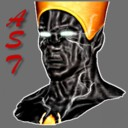

Forums galactiques > Taverne galactique : lieu de discussion informel > lache agression
Pages : 1
minamotoyoshitsu16/11 ETU 20:16 | j'ai été attaquer par l'archimage je ne sais pour quel raison je lui demande de s'expliquer publiquement !!!!!!! merci d'avance yosh |
js1boys 16/11 ETU 20:25 | oh non de la csi pour l'ordre et la paix ! je demande a l'agresseur de venir s'exprimer |
sayyadina 16/11 ETU 20:56  | Tiens pour une foix que je peux vous parler cher Commandant Minamotoyoshitsu, je vais vous dire deux mots. rendez toutes les planètes prises dans le Système 217 ( mon Système Natal ) y compris celle de mon allié PhilH. Je ne ferais aucune concession, je veux l'intégralité des planètes que vous avez donné si gentiment à un nouveau Commandant nommé Vladimir. Parlez lui en vite, faites en sorte qu'il nous rende nos planètes et vous n'aurez aucune poursuite contre vous deux. Si dans 24H nos planètes n'ont pas été restitué, vous en subirez les conséquences durement..... J'espère que ce message vous fera réagir dans le bon sens et que vos petites magouilles avec le Commandant Vladimir cesseront. Mes Respects à toutes et à tous, Camarade Sayyadina. |
| PhilH  16/11 ETU 21:25 | Oui, si vous souhaitez des explications, il faudrait commencer par vous mettre à table mon cher Minamotoyoshitsu. Parce que là, je ne suis pas surpris de vous trouver des ennemis. Votre petite excurtion dans le système 217 nous a tout de même couté 9 planètes entre moi et le Commandant Sayyadina. Et tout ça sans la moindre explication... enfin si, un baillement aux corneilles en réponse à mes MP ! De plus, vous n'avez eu aucun remord à lachement profiter du bug divin. A l'heure actuelle, le Commandant Vladimir m'a rendu mes planètes (en avouant apparemment s'être fait roulé ?) et je vous sommes d'en faire autant avec celles du Commandant Sayyadina. De plus, je réclame un dédomagement pour les pertes financières encourues. Je suis curieux d'entendre vos explications sur tout ça... |
PhilH16/11 ETU 21:29 | Rectificatif, je n'ai pas tout récupéré, il reste encore 3 planètes entre les mains des Commandants Minamotoyoshitsu et Vladimir... et ma patience a des limites ! |
Archimage Antonophix 17/11 ETU 09:31 | L Affaire a été réglé commandant, De plus unitul de rapeller que vous avez engager le conflit, COrdialement, Antonophix |
minamotoyoshitsu17/11 ETU 18:26 | je suis completemant d'accord avec vous philh car prophete sachant mon mot de passe a non seulement envoyez ce baillement au corneille mais il a bombarder mon systeme 91 et a attaquer sayyadina qui voulais donner les planetes a phil mais apres il les a vendu avec mon compte a vladimir j'espere qu'il vous a redonner les planetes mais quand meme! prophete n'avait pas a faire ça! cordialement yosh |
yable 17/11 ETU 18:33 | Il est inutile de vous conseiller de mieux proteger votre centre de commandement j'imagine que vous l'avez déjà fait ? (changer de mot de passe). Sinon, pouvez vous expliquer les différents bombardements hyperatomiques que vous avez envoyés, notemment sur le système 0 ? Avant de venir vous plaindre, il serait peut être bon que vous cessiez vous même d'attaquer n'importe comment, sinon la légitimité de vos plaintes sont nulles. Cordialement, yable. |
Imothep 17/11 ETU 18:36 | Minamoto, votre compte sera supprimé. Vos 50 tirs atomiques dans le système 0 vont vous vouter très très chers. Vsous avez décidé de vous joindre à l'attaque ultremisto-golsteinienne, il va falloir assumer vos actes. |
PhilH17/11 ETU 18:52 | Moi, j'avoue que j'aimerai bien entendre la version de Profète dans tout ça :-) En tout cas mon cher Minamoto, je vous conseille de cesser immédiatement vos attaques et de rendre la totalité des planètes envahis (plus un dédomagement pour la reconstruction). Sinon, vous n'avez pas fini d'agrandir votre liste d'amis :-) |
Baptiste 17/11 ETU 18:57 | Pendant qu'on y est qui est votre employeur sayyadina ?Je n'ais rien contre vous mais si je devine qui c'est il n'aurat aucun répit et je le poursuivrais système après système, planète après planète, étoile après étoile mais je le trouverais. |
js1boys17/11 ETU 18:58 | probleme dans le systeme 0 ezt 7 ! alerte |
Prophéte 17/11 ETU 19:11 | je ne suis pas dacord je conteste les faits je n'ai lanssé que 20bombardemant d'en le 0 et quelque autre dans les autre c'est tout. |
js1boys17/11 ETU 19:12 | c'est tout mais tu es entraint d'exterminer des commandants |
Prophéte17/11 ETU 19:14 | bah il s'en remetront. |
Commandant Kerstan 17/11 ETU 19:36 | Je peux savoir à quoi ça t'as servi à toi et à ton collègue de bombarder le 0 ? Apart à jouer les gros bras et risquer de vous prendre tous les deux une savré riposte... |
js1boys17/11 ETU 20:19 | ils se prennent pour des boss ! mais si tout le monde ,les attaquerait ,il le fairait beaucoup moin les malin ! alors je demande a ce type de commandant barbare : comme ta brioche , le prophéte, ou autre de ce calmer pour le bien de tous ! |
PhilH17/11 ETU 20:52 | "Pendant qu'on y est qui est votre employeur sayyadina ? Je n'ais rien contre vous mais si je devine qui c'est il n'aurat aucun répit et je le poursuivrais système après système, planète après planète, étoile après étoile mais je le trouverais." : Commandant Baptiste, que signifient ces propos ? Je vous rappèle que les victimes c'est moi et le Commandant Sayyadina !!! |
Pages : 1
Forums galactiques > Taverne galactique : lieu de discussion informel > lache agression